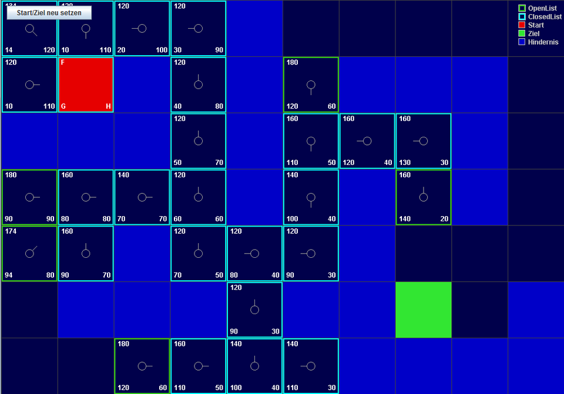
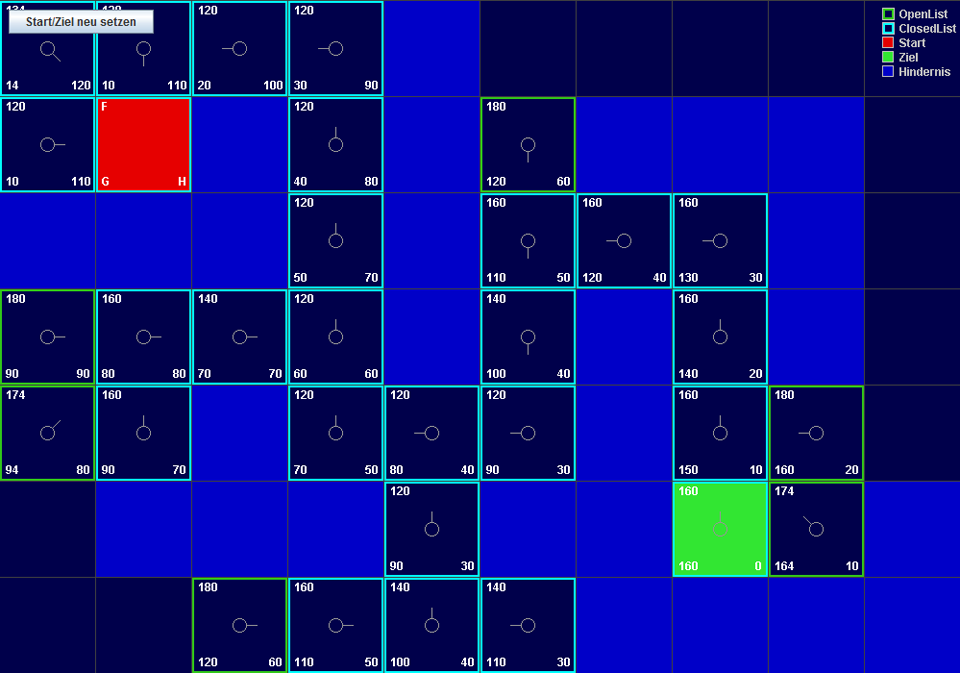
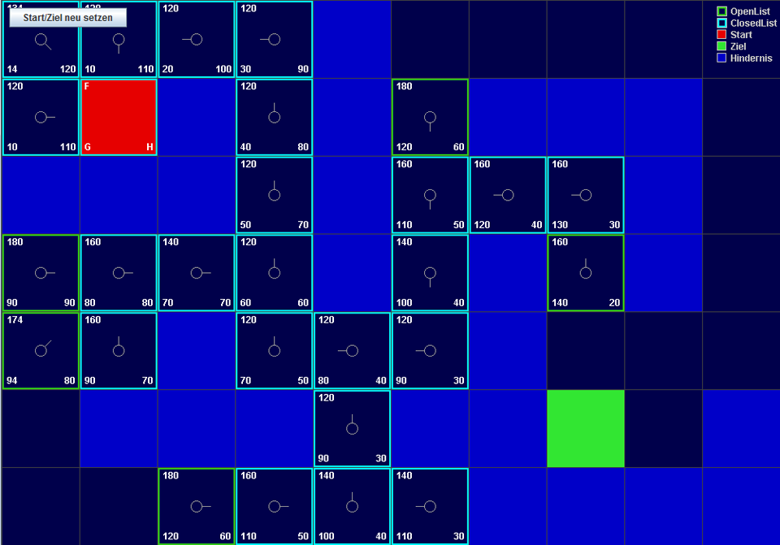
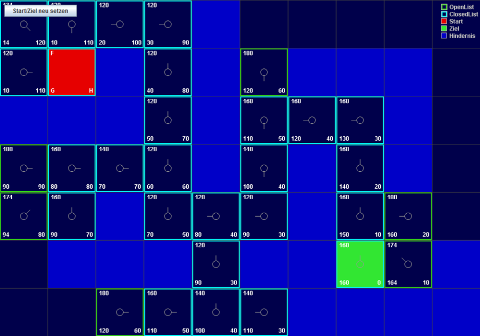

Pathfinding using the A*-Algorithm
This java app visualizes the A*-Algorithm. I used it to explain the algorithm in one of my videos and in a talk I held at university. You can download it from my A* explainer repository.
 ">
">
">
">
Description
This program visually illustrates the step by step processes of the A*-Algorithm. The goal of this algorithm is to find the shortest possible path from A to B in a node-graph.
Instructions
You can switch between two modes with the button in the top left corner. Depending on the current mode a left mouse click will either set new walls or reset the start, while a right mouse click will either delete walls or reset the destination.
You can either watch A* unfold step-by-step by repeatedly pressing the spacebar or jump right to the end by pressing enter.
Time of Development:
Early 2014